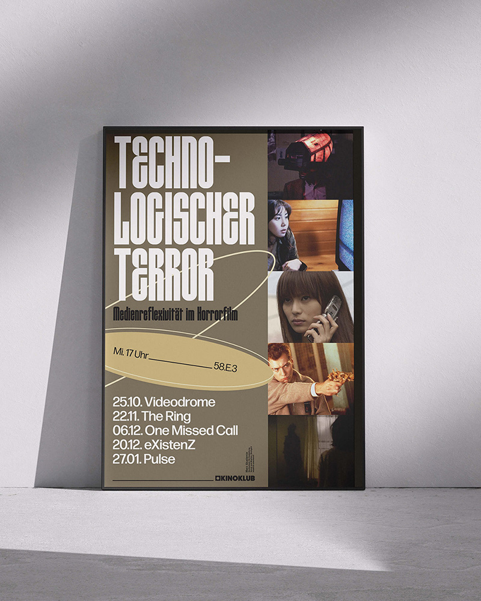
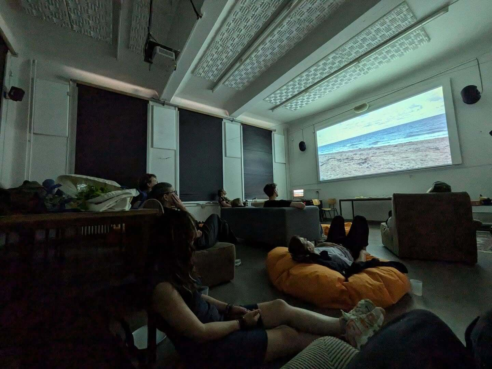
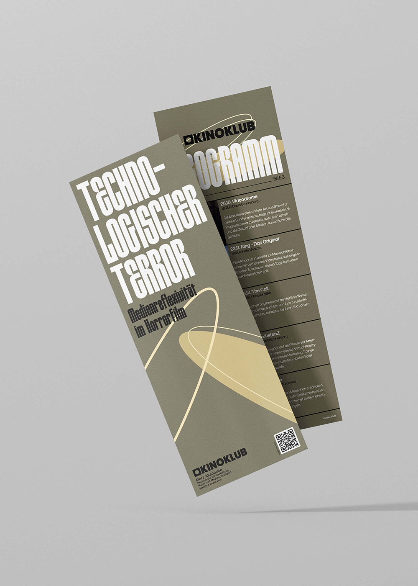
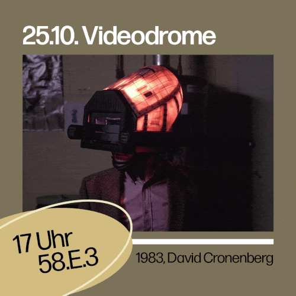

The Cinema Club (»KinoKlub«) at the Merz Akademie is a project initiated in 2021 by my fellow student Uliana Drashchenko. Within the framework of this club, we met regularly to watch a wide range of films and to engage in a (semi-)academic discourse about them. The pandemic, however, altered the structural conditions of the academy. The underlying idea was to re-emphasize the social dimension of film viewing—that collective experience which has always been inscribed in the culture of cinema.
In the winter semester 2023/24, I was given the opportunity to take over the management of this club and not only curate a program but also design and produce the promotional materials. My program »Technological Terror—Media Reflexivity in Horror Film« dealt with the question of how different films portray (new) media and why this usually takes place in the mode of the horror film. Above all, my personal goal was to connect film studies theories with popular culture films such as »The Ring« and to make them fruitful for further in-depth reflection. For the promotional material, I designed a poster, program flyers, and slides for Instagram, which you can see above.
Der KinoKlub an der Merz Akademie ist ein Projekt, das von meiner Kommilitonin Uliana Drashchenko im Jahr 2021 ins Leben gerufen wurde. Innerhalb dieses Clubs trafen wir uns regelmäßig, um die verschiedensten Filme anzuschauen und darüber in einen (halb-)wissenschaftlichen Diskurs zu gehen. Durch die Pandemie veränderte sich die Struktur der Akademie. Die zugrunde liegende Idee bestand darin, die soziale Dimension des Filmeschauens wieder stärker zu betonen – jene gemeinschaftliche Erfahrung, die der Kinokultur seit jeher eingeschrieben ist.
Im Wintersemester 20233/24 bekam ich die Möglichkeit die Leitung für diesen Club zu übernehmen und nicht nur ein Programm zu kuratieren, sondern auch die Werbematerialien zu entwerfen und produzieren. Mein Programm »Technologischer Terror – Medienreflexivität im Horrorfilm« beschäftigte sich mit der Fragestellung, wie verschiedene Filme (neue) Medien porträtieren und warum dies meistens im Modus des Horrorfilms stattfinde. Mein persönliches Ziel vor allem war es, filmwissenschaftliche Theorien mit populärkulturellen Filmen wie »Ring – Das Original« zu verbinden und für eine weitere tiefgreifendere Reflexion fruchtbar zu machen.


